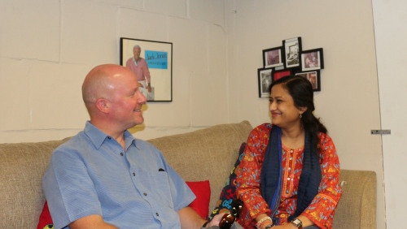

Photographing the Indian Diaspora - In Conversation with Preston Merchant
In this show, we talk to Preston Merchant about the Indian diaspora, India, politics, California, photography, and other fun things.
Preston Merchant is a California based photo journalist. He teaches photography as an adjunct professor at the Columbia University’s Graduate School of Journalism in New York. His pictures can be found at his website:archive.prestonmerchant.com
Preston is currently working on INDIAWORLD, a book-length photo essay about the Indian diaspora communities of North America, the Caribbean, Britain, Africa, the Middle East, Southeast Asia, and the South Pacific. Part of his work is featured in the Smithsonian Institution’s exhibit, “Beyond Bollywood: Indian Americans Shape the Nation.” The exhibition is coming to the Bay Area starting August 1st and can be seen at the Olive Hyde Art Gallery in Fremont, CA.
Preston has contributed to media in the US, India, and Europe, including The Wall Street Journal, National Public Radio, India West, India Abroad, The Caravan, The Hindu, Das Magazin, and other places. He was a guest blogger for Sepia Mutiny and is currently a contributing photographer at The Aerogram.
Preston has photographed in 15 countries, including India. Indians are all over the world for historic reasons (the need for labor in British sugar colonies), economic opportunity (trade), professional advancement (the engineers, doctors, and others who came to the US after 1965), and personal concerns (better opportunities for the family). Through his photographs, Preston provides a glimpse of Indians spread all over the globe.